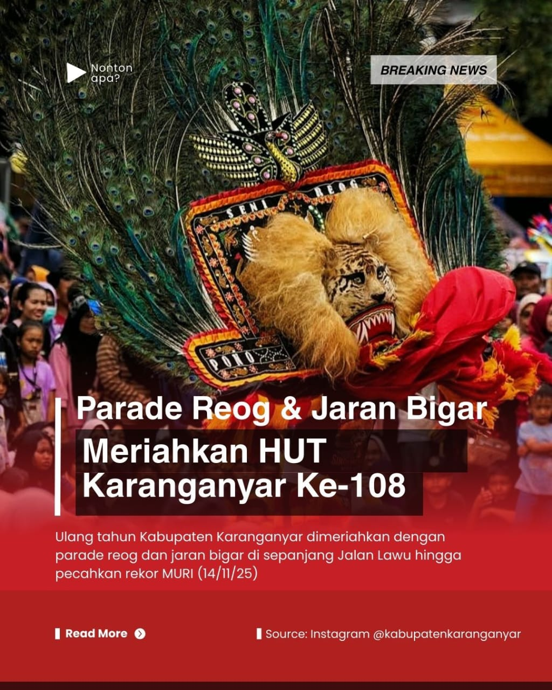

TEATER TENDA
Teater Tenda merupakan kelompok teater yang ada di SMA N 2 Karanganyar. Di bawah naungan kelompok teater pelajar (KETAPEL) Karanganyar, Teater Tenda cukup konsisten menyajikan pentas produksi.
Ini menunjukkan bahwa di Karanganyar, seni teatrikal sebuah teater masih dilestarikan dan ditampilkan di tengah gempuran hiburan media modern.

FESTIVAL REOG & JARAN BIGAR - HARI JADI KE-108 KARANGANYAR
Perayaan Hari Jadi ke-108 Kabupaten Karanganyar pada 14 November 2025 berlangsung meriah, dengan Jalan Lawu disulap menjadi panggung budaya terbesar. Ribuan warga menyaksikan penampilan 12 grup Reog dan 25 kelompok Jaran Bigar.
Puncak acara: Pemecahan rekor MURI dengan 360 unit sound system serentak sepanjang 5 km, simbol komitmen pelestarian seni budaya daerah dan kebersamaan warga.